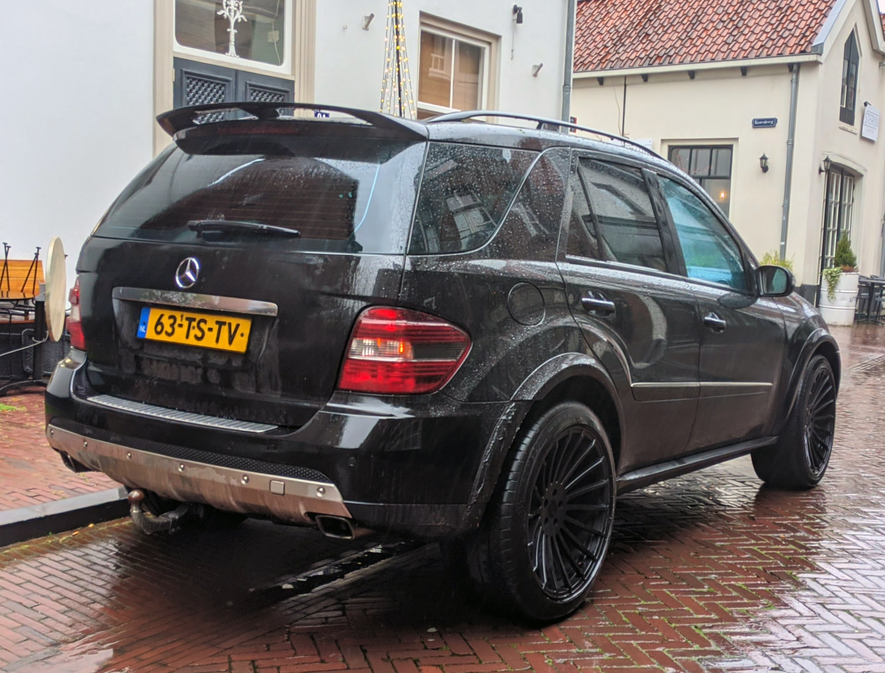
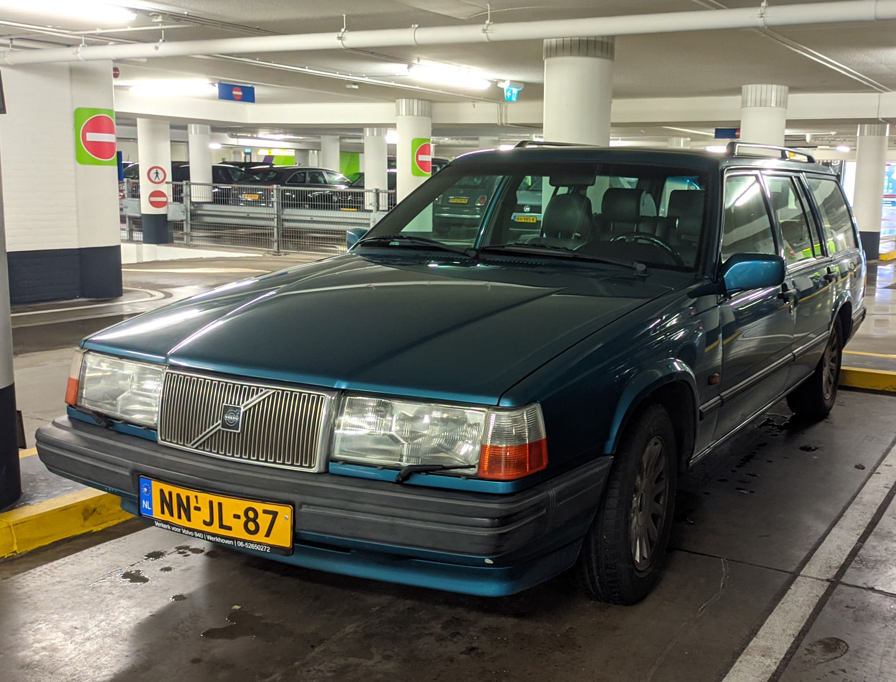
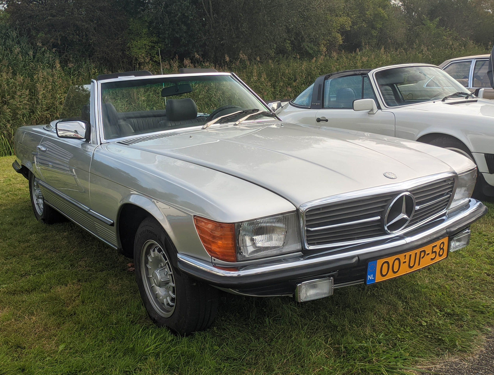

License Plates of
The Netherlands (NL)
Photographed in The Netherlands

No Sidecode. One-day Plate Series. S = January. Used to temporarily allow a vehicle without a valid Dutch license plate or with an invalid license plate on the road for an inspection appointment, whereby it is only valid on the day of the inspection.

Sidecode 11. Passenger Series. No Coding. Small 1 means this is the first replacement plate.


Sidecode 10. Passenger Series. No Coding. Small 1 means this is the first replacement plate.


Sidecode 9. Passenger Series. No Coding. Small 1 means this is the first replacement plate.

Sidecode 7. Passenger Series. No Coding. Small 1 means this is the first replacement plate.

Sidecode 6. Passenger Series. No Coding. Small 1 means this is the first replacement plate.

Sidecode 5. Passenger Series. No Coding. Small 1 means this is the first replacement plate.


Sidecode 4. Passenger Series. No Coding. Small 2 means this is the second replacement plate.

Sidecode 3. Passenger Series. No Coding. Small 1 means this is the second replacement plate.


Sidecode 9. Light Commercial Vehicle Series. V = Commercial Vehicle under 3500kg. Small 1 means this is the first replacement plate.


Sidecode 8. Light Commercial Vehicle Series. V = Commercial Vehicle under 3500kg. Small 1 means this is the first replacement plate.